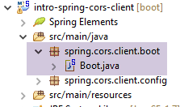
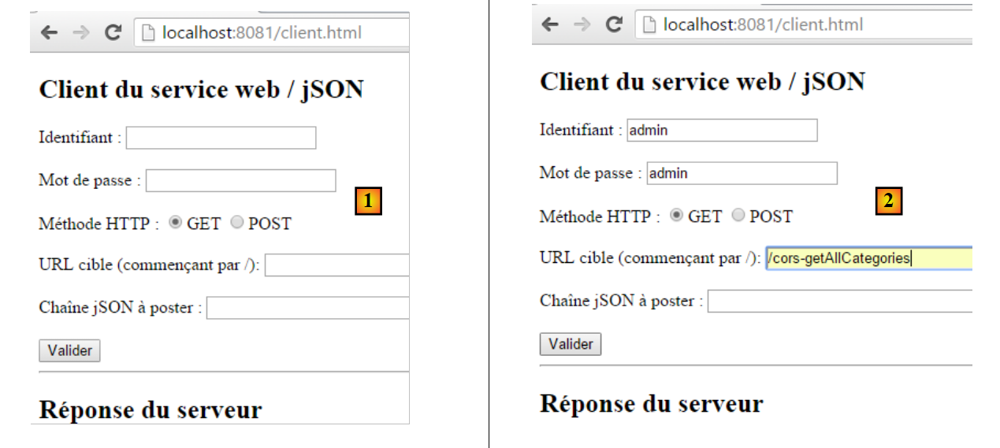
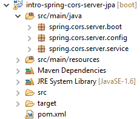
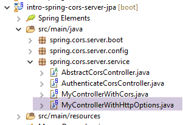

18. [المقرر]: مشاركة الموارد عبر الأصول
الكلمات المفتاحية: CORS (مشاركة الموارد عبر الأصول).
يقع هذا الفصل إلى حد ما خارج نطاق هذا البرنامج التعليمي. وقد تم تضمينه لأنه يقدم مقدمة عن برمجة الويب وبرمجة JavaScript. من المهم أن نتذكر أن أحد أهداف هذا البرنامج التعليمي هو عرض المفاهيم المستخدمة بشكل متكرر في تطوير JEE، أي تطوير الويب القائم على أطر عمل Java. هنا، نقوم بتوسيع نطاق خادم الويب المستخدم في دراسة قاعدة بيانات المنتجات والفئات لتمكينه من قبول الطلبات عبر المجالات.
في الوثيقة [دليل AngularJS / Spring 4]، نقوم بتطوير تطبيق عميل/خادم حيث يكون العميل تطبيق AngularJS:
 |
- تأتي صفحات HTML/CSS/JS لتطبيق Angular من الخادم [1]؛
- في [2]، ترسل خدمة [dao] طلبًا إلى خادم آخر، وهو الخادم [2]. حسنًا، هذا أمر محظور من قبل المتصفح الذي يشغل تطبيق Angular لأنه يمثل ثغرة أمنية. لا يمكن للتطبيق الاستعلام إلا عن الخادم الذي نشأ منه، أي الخادم [1]؛
في الواقع، من غير الدقيق القول إن المتصفح يمنع تطبيق Angular من الاستعلام عن الخادم [2]. فهو في الواقع يستعلم عنه ليسأله عما إذا كان يسمح لعميل لا ينشأ منه بالاستعلام عنه. تسمى تقنية المشاركة هذه CORS (مشاركة الموارد عبر الأصول). يمنح الخادم [2] الإذن عن طريق إرسال رؤوس HTTP محددة.
سننشئ البنية التالية:
 |
- في [1]، يقوم تطبيق ويب بتقديم صفحات HTML/JS؛
- في [2]، يقوم المتصفح بتنفيذ JavaScript المضمن في صفحات HTML للاستعلام عن خدمة الويب الآمنة [3]؛
18.1. الدعم
 |
يمكن العثور على مشاريع هذا الفصل في المجلد [support / chap-18].
18.2. مشروع العميل
قم بإنشاء مشروع Eclipse التالي:
 |
18.3. تكوين Maven
المشروع هو مشروع Maven يحتوي على ملف [pom.xml] التالي:
<project xmlns="http://maven.apache.org/POM/4.0.0" xmlns:xsi="http://www.w3.org/2001/XMLSchema-instance"
xsi:schemaLocation="http://maven.apache.org/POM/4.0.0 http://maven.apache.org/xsd/maven-4.0.0.xsd">
<modelVersion>4.0.0</modelVersion>
<groupId>istia.st.webjson</groupId>
<artifactId>intro-server-webjson-01</artifactId>
<version>0.0.1-SNAPSHOT</version>
<name>intro-server-webjson-01</name>
<description>démo spring mvc</description>
<parent>
<groupId>org.springframework.boot</groupId>
<artifactId>spring-boot-starter-parent</artifactId>
<version>1.2.7.RELEASE</version>
</parent>
<dependencies>
<dependency>
<groupId>istia.st.springdata</groupId>
<artifactId>intro-spring-data-01</artifactId>
<version>0.0.1-SNAPSHOT</version>
</dependency>
<dependency>
<groupId>org.springframework.boot</groupId>
<artifactId>spring-boot-starter-web</artifactId>
</dependency>
</dependencies>
<build>
<plugins>
<plugin>
<groupId>org.springframework.boot</groupId>
<artifactId>spring-boot-maven-plugin</artifactId>
</plugin>
<plugin>
<groupId>org.apache.maven.plugins</groupId>
<artifactId>maven-surefire-plugin</artifactId>
<version>2.18.1</version>
</plugin>
</plugins>
</build>
</project>
- الأسطر 11–15: هذا مشروع Spring Boot؛
- الأسطر 23–26: نستخدم التبعية [spring-boot-starter-web]، التي تتضمن خادم Tomcat و Spring MVC؛
18.4. إعدادات الربيع
 |
فيما يلي فئة [WebConfig] التي تهيئ مشروع Spring:
package spring.cors.client.config;
import org.springframework.beans.factory.annotation.Autowired;
import org.springframework.boot.context.embedded.EmbeddedServletContainerFactory;
import org.springframework.boot.context.embedded.ServletRegistrationBean;
import org.springframework.boot.context.embedded.tomcat.TomcatEmbeddedServletContainerFactory;
import org.springframework.context.ApplicationContext;
import org.springframework.context.annotation.Bean;
import org.springframework.web.context.WebApplicationContext;
import org.springframework.web.servlet.DispatcherServlet;
import org.springframework.web.servlet.config.annotation.EnableWebMvc;
import org.springframework.web.servlet.config.annotation.ResourceHandlerRegistry;
import org.springframework.web.servlet.config.annotation.WebMvcConfigurerAdapter;
@EnableWebMvc
public class WebConfig extends WebMvcConfigurerAdapter {
// -------------------------------- layer configuration [web]
@Autowired
private ApplicationContext context;
@Bean
public DispatcherServlet dispatcherServlet() {
DispatcherServlet servlet = new DispatcherServlet((WebApplicationContext) context);
return servlet;
}
@Bean
public ServletRegistrationBean servletRegistrationBean(DispatcherServlet dispatcherServlet) {
return new ServletRegistrationBean(dispatcherServlet, "/*");
}
@Bean
public EmbeddedServletContainerFactory embeddedServletContainerFactory() {
return new TomcatEmbeddedServletContainerFactory("", 8081);
}
@Override
public void addResourceHandlers(ResourceHandlerRegistry registry) {
registry.addResourceHandler("/*.html").addResourceLocations("classpath:/static/");
registry.addResourceHandler("/*.js").addResourceLocations("classpath:/static/js/");
}
}
- السطر 15: تقوم الفئة بتكوين مشروع Spring MVC؛
- السطر 16: الفئة تمتد فئة [WebMvcConfigurerAdapter] لتجاوز بعض أساليبها؛
- الأسطر 18–36: لقد صادفنا هذه الحبوب بالفعل، على سبيل المثال في القسم 13.5.3.1. لاحظ، في السطر 35، أن خدمة الويب ستعمل على المنفذ 8081؛
- الأسطر 38–42: تسمح لك طريقة [addResourceHandlers] بتعريف الموارد الثابتة، أي الموارد التي لا يتعامل معها [DispatcherServlet] في السطر 23؛
- السطر 40: أي طلب لمورد بامتداد .html سيعيد الملف المطلوب في الطلب والموجود في المجلد [static] في مسار فئات المشروع؛
- السطر 41: أي طلب لمورد بامتداد .js سيعيد ملف JavaScript المطلوب في الطلب والموجود في المجلد [static/js] في مسار فئات المشروع؛
 |
18.5. أساسيات jQuery و JavaScript
ستكون صفحة HTML الخاصة بالعميل كما يلي:
 |
وستتضمن كود JavaScript (JS) الذي يعمل في المتصفح. سنغطي بعض أساسيات JavaScript لمساعدتنا على فهم الكود. سيقوم العميل بإجراء طلبات HTTP باستخدام مكتبة jQuery [https://jquery.com/]، التي توفر العديد من الوظائف التي تبسط تطوير JavaScript. نقوم بإنشاء ملف HTML ثابت [jQuery.html] ونضعه في المجلد [static]:
 |
سيحتوي هذا الملف على المحتوى التالي:
<!DOCTYPE html>
<html xmlns="http://www.w3.org/1999/xhtml">
<head>
<meta http-equiv="Content-Type" content="text/html; charset=utf-8" />
<title>JQuery-01</title>
<script type="text/javascript" src="/jquery-2.1.3.min.js"></script>
</head>
<body>
<h3>Rudiments de JQuery</h3>
<div id="element1">Elément 1</div>
</body>
</html>
- السطر 6: استيراد jQuery؛
- الأسطر 10–12: عنصر صفحة بمعرف [element1]. سنعمل مع هذا العنصر.
نحتاج إلى تنزيل الملف [jquery-2.1.3.min.js]. يمكن العثور على أحدث إصدار من jQuery على الرابط [http://jquery.com/download/]:

ضع الملف الذي تم تنزيله في المجلد [static/js] وقم بتحديث السطر 6 من ملف HTML ليتوافق مع الإصدار المثبت.
بمجرد الانتهاء من ذلك، افتح العرض الثابت [jQuery.html] في Chrome [1-2]:
 |
في Google Chrome، اضغط على [Ctrl-Shift-I] لفتح أدوات المطور [3]. تتيح لك علامة التبويب [Console] [4] تشغيل كود JavaScript. أدناه، نقدم أوامر JavaScript التي يمكنك كتابتها ونشرح وظائفها.
|
: يُرجع مجموعة جميع العناصر التي تحمل المعرف [element1]، لذلك عادةً ما تكون المجموعة مكونة من عنصر واحد أو لا شيء لأنه لا يمكن أن يكون هناك معرفان متطابقان في صفحة HTML. |  |
|
: يعيّن النص [blabla] لجميع العناصر في المجموعة. يؤدي هذا إلى تغيير المحتوى المعروض على الصفحة |  |
|
يخفي العناصر في المجموعة. لم يعد النص [blabla] معروضًا. |  |
|
: يعرض المجموعة مرة أخرى. هذا يسمح لنا برؤية أن العنصر الذي يحمل المعرف [element1] يحتوي سمة CSS style='display: none;'، مما إخفاء العنصر. | |
|
: يعرض العناصر الموجودة في المجموعة. يظهر النص [blabla] مرة أخرى. إنها السمة style='display: block;' هو الذي يضمن هذا . |  |
|
: يحدد سمة لجميع العناصر في المجموعة. السمة هنا هي [style] وقيمتها [color: red]. يتحول النص [blabla] إلى اللون الأحمر. |  |
 | |
 |
لاحظ أن عنوان URL للمتصفح لم يتغير خلال كل هذه العمليات. لم يكن هناك أي اتصال بخادم الويب. كل شيء يحدث داخل المتصفح. والآن، دعونا نلقي نظرة على كود مصدر الصفحة:
 |  |
هذا هو النص الأصلي. وهو لا يعكس التغييرات التي أجريناها على العنصر في الأسطر 10-12. من المهم تذكر ذلك عند تصحيح أخطاء جافا سكريبت. ولذلك، غالبًا ما يكون من غير الضروري الاطلاع على شفرة المصدر للصفحة المعروضة.
18.6. كود JavaScript الخاص بالتطبيق
لنعد إلى صفحة تطبيق العميل التي ستستعلم عن خدمة الويب / jSON:
 |
 |
فيما يلي كود HTML لهذه الصفحة:
<!DOCTYPE html>
<html>
<head>
<meta charset="UTF-8">
<title>Spring MVC</title>
<script type="text/javascript" src="/jquery-2.1.3.min.js"></script>
<script type="text/javascript" src="/client.js"></script>
</head>
<body>
<h2>Client du service web / jSON</h2>
<form id="formulaire">
<!-- identifier -->
Identifiant :
<!-- -->
<input type="text" id="identifiant" name="identifiant" value="" />
<!-- password -->
<br /> <br /> Mot de passe :
<!-- -->
<input type="text" id="password" name="password" value="" />
<!-- method HTTP -->
<br /> <br /> Méthode HTTP :
<!-- -->
<input type="radio" id="get" name="method" value="get"
checked="checked" />GET
<!-- -->
<input type="radio" id="post" name="method" value="post" />POST
<!-- URL -->
<br /> <br />URL cible (commençant par /): <input type="text"
id="url" size="30"><br />
<!-- posted value -->
<br /> Chaîne jSON à poster : <input type="text" id="posted"
size="50" />
<!-- validation button -->
<br /> <br /> <input type="button" value="Valider"
onclick="javascript:requestServer()"></input>
</form>
<hr />
<h2>Réponse du serveur</h2>
<div id="response"></div>
</body>
</html>
- السطر 6: نستورد مكتبة jQuery؛
- السطر 7: نستورد الكود الذي سنكتبه؛
- الأسطر 15 و19 و26 و29 و31: لاحظ معرفات [id] لمكونات الصفحة. يشير JavaScript إلى هذه المكونات عبر هذه المعرفات؛
الكود [client.js] هو كما يلي:
// global data
var url;
var posted;
var response;
var method;
var baseUrl = 'http://localhost:8080';
var identifiant;
var password;
var authorizationHeader;
function requestServer() {
// information retrieval
var urlValue = url.val();
var postedValue = posted.val();
var identifiantValue = identifiant.val();
var passwordValue = password.val();
var method = document.forms[0].elements['method'].value;
authorizationCode = btoa(identifiantValue + ':' + passwordValue);
// delete the previous answer
response.text("");
// make a manual Ajax call
if (method === "get") {
doGet(urlValue);
} else {
doPost(urlValue, postedValue);
}
}
function doGet(url) {
// make a manual Ajax call
$.ajax({
headers : {
'Authorization':'Basic '+authorizationCode
},
url : baseUrl + url,
type : 'GET',
dataType : 'text',
beforeSend : function() {
},
success : function(data) {
// text result
response.text(data);
},
complete : function() {
},
error : function(jqXHR) {
// system error
response.text(JSON.stringify(jqXHR.statusCode()));
}
})
}
function doPost(url, posted) {
// make a manual Ajax call
$.ajax({
headers : {
'Authorization':'Basic '+authorizationCode
},
url : baseUrl + url,
type : 'POST',
contentType : 'application/json; charset=UTF-8',
data : posted,
dataType : 'text',
beforeSend : function() {
},
success : function(data) {
// text result
response.text(data);
},
complete : function() {
},
error : function(jqXHR) {
// system error
response.text(JSON.stringify(jqXHR.statusCode()));
}
})
}
// document loading
$(document).ready(function() {
// retrieve page component references
identifiant = $("#identifiant");
password = $("#password");
url = $("#url");
posted = $("#posted");
response = $("#response");
});
- الأسطر 80–87: كود JavaScript الذي يتم تنفيذه بعد انتهاء تحميل المستند في المتصفح؛
- الأسطر 81-86: استرداد مراجع العناصر المختلفة في مستند HTML عبر معرفات [id] الخاصة بها؛
- الأسطر 2-9: متغيرات عامة يمكن الوصول إليها من خلال جميع الوظائف المحددة في ملف JavaScript؛
- السطر 13: يسترد عنوان URL الذي أدخله المستخدم؛
- السطر 14: يسترد القيمة التي يريد المستخدم إرسالها (فارغة في حالة عملية GET)؛
- السطر 15: استرداد اسم المستخدم الذي أدخله المستخدم؛
- السطر 16: استرداد كلمة المرور الخاصة به؛
- السطر 17: يسترد الطريقة [get] أو [post] لاستخدامها عند طلب عنوان URL من السطر 9:
- [document] يشير إلى المستند الذي تم تحميله بواسطة المتصفح، والمعروف باسم DOM (نموذج كائن المستند)،
- [document.forms[0]] يشير إلى النموذج الأول في المستند؛ قد يحتوي المستند على نماذج متعددة. هنا، يوجد نموذج واحد فقط،
- [document.forms[0].elements['method']] يشير إلى عنصر النموذج الذي يحتوي على السمة [name='method']. وهناك اثنان:
<input type="radio" id="get" name="method" value="get" checked="checked" />GET
<input type="radio" id="post" name="method" value="post" />POST
- (تابع)
- [document.forms[0].elements['method'].value] هي القيمة التي سيتم إرسالها للمكون الذي يحمل السمة [name='method']. ونحن نعلم أن القيمة المرسلة هي قيمة السمة [value] الخاصة بزر الاختيار المحدد. وبالتالي، ستكون هنا إحدى السلاسل ['get', 'post'];
- السطر 18: نقوم بإنشاء ترميز Base74 للسلسلة `username:password`. سيتم استخدام هذه السلسلة المرمزة في رأس HTTP [Authorization] الذي سنرسله إلى الخادم لمصادقة الطلب؛
- الأسطر 22–26: اعتمادًا على طريقة HTTP التي سيتم استخدامها، نقوم بتنفيذ طريقة [doGet] أو [doPost]؛
- تقوم طريقة jQuery [$.ajax] بإجراء طلب HTTP؛
- الأسطر 32–34: نتواصل مع خادم يتطلب رأس HTTP [Authorization: Basic code]؛
- السطر 35: سيقوم المستخدم بإدخال عناوين URL بالشكل [/cors-getAllCategories,/cors-addProduits, ...]. لذلك يجب استكمال عناوين URL هذه بعنوان URL للخادم من السطر 6؛
- السطر 36: طريقة HTTP المطلوب استخدامها؛
- السطر 37: يعرض الخادم JSON. نحدد النوع [text] كنوع النتيجة لعرضها تمامًا كما تم استلامها؛
- السطر 42: عرض استجابة النص من الخادم؛
- السطران 48-49: عرض أي رسالة خطأ؛
- السطر 53: تستقبل طريقة [doPost] معلمة ثانية، وهي القيمة المراد إرسالها؛
- السطر 61: للإشارة إلى أن القيمة المرسلة ستكون في شكل سلسلة JSON؛
18.7. تنفيذ العميل
تطبيق العميل هو تطبيق Spring Boot يتم تشغيله بواسطة فئة [Boot] القابلة للتنفيذ التالية:
 |
package spring.cors.client.boot;
import org.springframework.boot.SpringApplication;
import spring.cors.client.config.WebConfig;
public class Boot {
public static void main(String[] args) {
SpringApplication.run(WebConfig.class, args);
}
}
- السطر 10: تستخدم طريقة [SpringApplication.run] ملف التكوين [WebConfig]. سيتم نشر الصفحة [client.html] على خادم Tomcat الموجود في مسار فئات المشروع؛
18.8. عنوان URL [/getAllCategories]
نقوم بتشغيل:
- خادم الويب/JSON على المنفذ 8080؛
- العميل الخاص بهذا الخادم على المنفذ 8081؛
ثم نطلب عنوان URL [http://localhost:8081/client.html] [1]:
 |
- في [2]، نقوم بإجراء طلب GET على عنوان URL [http://localhost:8080/getAllCategories]؛
لا نتلقى أي استجابة من الخادم. وعندما ننظر إلى وحدة تحكم مطوري Chrome (Ctrl-Shift-I)، نرى خطأً:
 |
- في [1]، نحن في علامة التبويب [الشبكة]؛
- في [2]، نرى أن طلب HTTP الذي تم إرساله ليس [GET] بل [OPTIONS]. في حالة الطلب عبر النطاقات، يتحقق المتصفح من الخادم للتأكد من استيفاء شروط معينة عن طريق إرسال طلب HTTP [OPTIONS]. في هذه الحالة، الطلبات هي تلك المشار إليها بالعلامات [5-6]؛
- في [5]، يسأل المتصفح عما إذا كان يمكن الوصول إلى عنوان URL الهدف باستخدام GET. يطلب رأس الطلب [Access-Control-Request-Method] استجابة برأس HTTP [Access-Control-Allow-Methods] يشير إلى قبول الطريقة المطلوبة؛
- في [6]، يرسل المتصفح رأس HTTP [Origin: http://localhost:8081]. يطلب رأس الطلب هذا استجابة في رأس HTTP [Access-Control-Allow-Origin] تشير إلى قبول المنشأ المحدد؛
- في [7]، يسأل المتصفح عما إذا كان رأسا HTTP [Accept] و [Authorization] مقبولين. يتوقع رأس الطلب [Access-Control-Request-Headers] استجابة برأس HTTP [Access-Control-Allow-Headers] يشير إلى أن الرؤوس المطلوبة مقبولة؛
- يحدث خطأ في [3]. يؤدي النقر على الرمز إلى ظهور الخطأ [4]؛
- في [4]، تشير الرسالة إلى أن الخادم لم يرسل رأس HTTP [Access-Control-Allow-Origin]، الذي يحدد ما إذا كان مصدر الطلب مقبولاً أم لا؛
- في [8]، يمكننا أن نرى أن الخادم لم يرسل هذا الرأس بالفعل. ونتيجة لذلك، رفض المتصفح إجراء طلب HTTP GET الذي تم طلبه في البداية؛
نحتاج إلى تعديل خادم الويب / JSON.
18.9. خدمة الويب الجديدة / json
نقوم بإنشاء مشروع Maven جديد [intro-spring-cors-server-jpa]:
 |  |
18.9.1. تكوين Maven
تكوين Maven للخدمة الويب الجديدة هو كما يلي:
<project xmlns="http://maven.apache.org/POM/4.0.0" xmlns:xsi="http://www.w3.org/2001/XMLSchema-instance"
xsi:schemaLocation="http://maven.apache.org/POM/4.0.0 http://maven.apache.org/xsd/maven-4.0.0.xsd">
<modelVersion>4.0.0</modelVersion>
<groupId>istia.st.cors</groupId>
<artifactId>spring-cors-server-jpa</artifactId>
<version>0.0.1-SNAPSHOT</version>
<name>spring-cors-server-jpa</name>
<description>démo spring cors</description>
<properties>
<project.build.sourceEncoding>UTF-8</project.build.sourceEncoding>
<java.version>1.8</java.version>
</properties>
<parent>
<groupId>org.springframework.boot</groupId>
<artifactId>spring-boot-starter-parent</artifactId>
<version>1.2.7.RELEASE</version>
</parent>
<dependencies>
<dependency>
<groupId>istia.st.spring.security</groupId>
<artifactId>intro-spring-security-server-01</artifactId>
<version>0.0.1-SNAPSHOT</version>
</dependency>
</dependencies>
<!-- plugins -->
<build>
<plugins>
<plugin>
<groupId>org.springframework.boot</groupId>
<artifactId>spring-boot-maven-plugin</artifactId>
</plugin>
<plugin>
<groupId>org.apache.maven.plugins</groupId>
<artifactId>maven-surefire-plugin</artifactId>
<version>2.18.1</version>
</plugin>
</plugins>
</build>
</project>
- الأسطر 23–27: نسترد جميع البيانات من العمل المنجز حتى الآن عن طريق الوصول إلى أرشيف /json الخاص بخادم الويب الآمن؛
18.9.2. تكوين Spring
فئة التكوين [AppConfig] هي كما يلي:
 |
package spring.cors.server.config;
import org.springframework.context.annotation.Bean;
import org.springframework.context.annotation.ComponentScan;
import org.springframework.context.annotation.Configuration;
import org.springframework.context.annotation.Import;
import spring.security.config.SecurityConfig;
@Configuration
@ComponentScan(basePackages = { "spring.cors.server.service" })
@Import({ SecurityConfig.class })
public class AppConfig {
// cross-domain queries
@Bean
public boolean isCorsEnabled() {
return true;
}
}
- السطر 10: الفئة هي فئة تكوين Spring؛
- السطر 11: يمكن العثور على مكونات Spring الأخرى في حزمة [spring.cors.server.service]؛
- الأسطر 16–19: نقوم بإنشاء مكون Spring باسم [isCorsEnabled] يشير إلى ما إذا كان يتم قبول العملاء خارج نطاق الخادم أم لا؛
18.9.3. فئة [AbstractCorsController]
فئة [AbstractCorsController]، التي ستكون الفئة الأم لجميع وحدات التحكم في هذا التطبيق:
 |
فيما يلي شفرة البرمجة الخاصة بها:
package spring.cors.server.service;
import javax.servlet.http.HttpServletResponse;
import org.springframework.beans.factory.annotation.Autowired;
public abstract class AbstractCorsController {
@Autowired
private boolean isCorsEnabled;
// sending options to the customer
public void setHeaders(String origin, HttpServletResponse response) {
// Cors allowed ?
if (!isCorsEnabled || origin == null || !origin.startsWith("http://localhost")) {
return;
}
// set header CORS
response.addHeader("Access-Control-Allow-Origin", origin);
// certain headers are allowed
response.addHeader("Access-Control-Allow-Headers", "accept, authorization");
// we authorize GET
response.addHeader("Access-Control-Allow-Methods", "GET");
}
}
- السطر 7: فئة [CorsController] هي فئة مجردة لأنها مصممة ليتم توسيعها، وليس لإنشاء مثيل لها؛
- الأسطر 13–24: تضيف طريقة [setHeaders] رؤوس HTTP المطلوبة لطلبات عبر النطاقات إلى [HttpServletResponse response] (السطر 13) المرسلة إلى العميل؛
- السطر 33: تقبل طريقة [setHeaders] كمعلمات:
- السلسلة [origin] الموجودة في رأس HTTP [Origin] لطلبات عبر النطاقات:
هنا، سيكون للمعلمة [origin] في السطر 13 القيمة [http://localhost:8081]. إذا لم يحتوي الطلب على رأس HTTP [Origin]، فسنضمن أن [origin==null]؛
- (تابع)
- كائن [HttpServletResponse response] الذي سيتم إرجاعه إلى العميل الذي أرسل الطلب؛
يتم إدخال هذين المعلمتين بواسطة Spring؛
- الأسطر 15–175: إذا تم تكوين التطبيق لقبول الطلبات عبر النطاقات، وإذا أرسل المرسل رأس HTTP [Origin]، وإذا كان هذا الأصل يبدأ بـ [http://localhost]، فسيتم قبول الطلب عبر النطاقات؛ وإلا، فسيتم رفضه؛
- السطر 19: إذا كان العميل في المجال [http://localhost:port]، فإننا نرسل رأس HTTP:
Access-Control-Allow-Origin: http://localhost:port
مما يعني أن الخادم يقبل أصل العميل؛
- السطر 21: لقد حددنا رأسين HTTP محددين في طلب HTTP [OPTIONS]:
استجابةً لرأس HTTP [Access-Control-Request-X]، يرد الخادم برأس HTTP [Access-Control-Allow-X] يحدد ما هو مسموح به. الأسطر 20–23 تكرر ببساطة طلب العميل للإشارة إلى أنه تم قبوله؛
18.9.4. وحدة التحكم [MyControllerWithHttpOptions]
لتجنب الحاجة إلى تعديل خادم الويب/JSON غير الآمن [intro-server-webjson-01] الذي تمت مناقشته في القسم 13.5.3، سنقوم بإنشاء وحدة تحكم جديدة. في حين أن الخادم غير الآمن يتعامل مع عنوان URL [/url]، فإن وحدة التحكم الجديدة ستتعامل مع عنوان URL [/cors-url]، وسيقبل هذا العنوان طلبات عبر الأصول.
فئة [MyControllerWithHttpOptions] هي وحدة التحكم التي ستتعامل مع طلبات HTTP من النوع [OPTIONS]:
 |
package spring.cors.server.service;
import javax.servlet.http.HttpServletRequest;
import javax.servlet.http.HttpServletResponse;
import org.springframework.stereotype.Controller;
import org.springframework.web.bind.annotation.PathVariable;
import org.springframework.web.bind.annotation.RequestHeader;
import org.springframework.web.bind.annotation.RequestMapping;
import org.springframework.web.bind.annotation.RequestMethod;
import com.fasterxml.jackson.core.JsonProcessingException;
@Controller
public class MyControllerWithHttpOptions extends AbstractCorsController {
@RequestMapping(value = "/cors-getAllCategories", method = RequestMethod.OPTIONS)
public void getAllCategories(@RequestHeader(value = "Origin", required = false) String origin,
HttpServletResponse httpServletResponse){
// headers CORS
setHeaders(origin, httpServletResponse);
}
...
- السطر 14: الفئة هي وحدة تحكم Spring MVC؛
- السطر 15: الفئة [MyControllerWithHttpOptions] تمتد من الفئة [AbstractCorsController] التي وصفناها للتو؛
- السطران 17-18: تعالج الطريقة [getAllCategories] (السطر 18) عنوان URL ["/cors-getAllCategories"] عند طلبه باستخدام طريقة HTTP [OPTIONS]؛
- السطر 18: تقبل طريقة [getAllCategories] معلمتين:
- [@RequestHeader(value = "Origin", required = false) String origin] لاسترداد قيمة رأس HTTP [Origin:http://localhost:8081] عند وجودها. في هذا المثال، ستتلقى المعلمة [String origin] القيمة [http://localhost:8081]. هذا الرأس غير مطلوب [required = false]. وعندما لا يكون موجودًا، ستكون قيمة المعلمة [String origin] هي null؛
- [HttpServletResponse httpServletResponse]: الاستجابة التي سيتم إرسالها إلى العميل؛
- السطر 21: نرسل رؤوس HTTP التي تتيح الطلبات عبر الأصول. يتم تعريف طريقة [setHeaders] في الفئة الأصلية [AbstractCorsController]؛
يتم ذلك لجميع عناوين URL التي يعرضها خادم الويب/JSON غير الآمن [intro-server-webjson-01] الذي تمت مناقشته في القسم 13.5.3. عندما يعرض هذا الخدمة عنوان URL [/url]، تعرض الفئة [MyControllerWithHttpOptions] أعلاه عنوان URL [/cors-url].
18.9.5. وحدة التحكم [MyControllerWithCors]
 |
فئة [MyControllerWithCors] هي وحدة التحكم التي ستتعامل مع طلبات HTTP [GET] و [POST]:
package spring.cors.server.service;
import javax.servlet.http.HttpServletRequest;
import javax.servlet.http.HttpServletResponse;
import org.springframework.beans.factory.annotation.Autowired;
import org.springframework.web.bind.annotation.PathVariable;
import org.springframework.web.bind.annotation.RequestHeader;
import org.springframework.web.bind.annotation.RequestMapping;
import org.springframework.web.bind.annotation.RequestMethod;
import org.springframework.web.bind.annotation.ResponseBody;
import com.fasterxml.jackson.core.JsonProcessingException;
import spring.webjson.service.MyController;
@Controller
public class MyControllerWithCors extends AbstractCorsController {
// spring dependencies
@Autowired
private MyController myController;
...
@RequestMapping(value = "/cors-getAllCategories", method = RequestMethod.GET, produces = "application/json; charset=UTF-8")
@ResponseBody
public String getAllCategories(@RequestHeader(value = "Origin", required = false) String origin,
HttpServletResponse httpServletResponse) throws JsonProcessingException {
// answer
return myController.getAllCategories();
}
...
- السطر 17: فئة [MyControllerWithCors] هي وحدة تحكم Spring MVC
- السطر 18: وهي تمتد من فئة [AbstractCorsController]؛
- السطران 21-22: حقن وحدة التحكم [MyController] من خادم الويب غير الآمن / JSON [intro-server-webjson-01] الذي تمت مناقشته في القسم 13.5.3؛
- الأسطر 25-27: تعالج طريقة [getAllCategories] عنوان URL [/cors-getAllCategories] (السطر 28) عند طلبها باستخدام طريقة HTTP [GET]؛
- السطر 26: سيتم إرسال نتيجة طريقة [getAllCategories] إلى العميل. هذه النتيجة عبارة عن دفق JSON (السمة [produces] في السطر 27 ونوع [String] للنتيجة في السطر 25)؛
- السطر 27: تتلقى الطريقة نفس المعلمات التي تتلقاها طريقة [getAllCategories] الخاصة بوحدة التحكم [MyControllerWithHttpOptions] التي درسناها للتو؛
- السطر 30: يتم استدعاء طريقة [myController.getAllCategories()] لإرسال الاستجابة؛
في النهاية، فإن طريقة [myController.getAllCategories()] الخاصة بالخادم غير الآمن هي التي ترسل الاستجابة. لقد قمنا ببساطة بإثراء استجابتها بالرؤوس المطلوبة لطلبات عبر النطاقات.
يتم ذلك لجميع عناوين URL التي يعرضها الخادم غير الآمن web/JSON [intro-server-webjson-01] الذي تمت مناقشته في القسم 13.5.3. عندما يعرض هذا الخدمة عنوان URL [/url]، تعرض فئة [MyControllerWithCors] أعلاه عنوان URL [/cors-url].
سيتم تنفيذ الطلب عبر النطاقات على النحو التالي:
- يطلب كود JavaScript الخاص بالعميل عنوان URL [/cors-url] باستخدام طلب HTTP GET أو POST؛
- يقوم المتصفح الذي ينفذ هذا الكود باعتراض الطلب ويطلب أولاً عنوان URL [/cors-url] باستخدام طلب HTTP OPTIONS للتحقق من أن خدمة الويب المستهدفة تقبل الطلبات عبر المنشأ؛
- تقوم إحدى الطرق في وحدة التحكم [MyControllerWithHttpOptions] بإرسال رؤوس العناوين عبر المجالات التي يتوقعها المتصفح؛
- ثم يطلب المتصفح عنوان URL الأولي [/cors-url] باستخدام طلب HTTP GET أو POST؛
- ثم تستجيب إحدى الطرق في وحدة التحكم [MyControllerWithCors]؛
18.9.6. الاختبارات
فئة التمهيد لمشروع [intro-spring-cors-server-jpa] هي كما يلي:
 |
package spring.cors.server.boot;
import org.springframework.boot.SpringApplication;
import spring.cors.server.config.AppConfig;
public class Boot {
public static void main(String[] args) {
SpringApplication.run(AppConfig.class, args);
}
}
- السطر 10: يتم تنفيذ الطريقة الثابتة [SpringApplication.run] باستخدام تكوين Spring [AppConfig]. ونتيجة لهذا التكوين، يتم تشغيل خادم Tomcat المضمن في أرشيفات المشروع، ويتم نشر تطبيق الويب [intro-spring-cors-server-jpa] عليه. كما يتم نشر تطبيق الويب الخاص بالخادم غير الآمن [intro-server-webjson-01]، والذي يعد جزءًا من أرشيفات المشروع، عليه. ونظرًا لأن المشروع [intro-spring-security-server-01] يعد أيضًا جزءًا من الأرشيفات، يتم في النهاية عرض نوعين من عناوين URL:
- عناوين خدمة الويب الآمنة: /url؛
- عناوين خدمة الويب التي تقبل الطلبات عبر النطاقات: /cors-url؛
نحن الآن جاهزون لإجراء المزيد من الاختبارات. نقوم بتشغيل الإصدار الجديد من خدمة الويب ونجد أن المشكلة لا تزال قائمة. لم يتغير شيء. إذا أضفنا عبارة إخراج وحدة التحكم في السطر 7 أدناه، فلن يتم عرضها أبدًا، مما يشير إلى أن طريقة [getAllCategories] لفئة [MyControllerWithHttpOptions] لم يتم استدعاؤها أبدًا؛
@Controller
public class MyControllerWithHttpOptions extends AbstractCorsController {
@RequestMapping(value = "/cors-getAllCategories", method = RequestMethod.OPTIONS)
public void getAllCategories(@RequestHeader(value = "Origin", required = false) String origin,
HttpServletResponse httpServletResponse){
System.out.println(un_texte) ;
// headers CORS
setHeaders(origin, httpServletResponse);
}
بعد إجراء بعض الأبحاث، اكتشفنا أن Spring MVC تتعامل بشكل افتراضي مع طلبات HTTP [OPTIONS] بنفسها. لذلك، فإن Spring هي التي تستجيب دائمًا، وليس أبدًا طريقة [getAllCategories] في السطر 5 أعلاه. يمكن تغيير هذا السلوك الافتراضي لـ Spring MVC. نقوم بتعديل فئة [AppConfig] الحالية:
 |
package spring.cors.server.config;
import javax.annotation.PostConstruct;
import org.springframework.beans.factory.annotation.Autowired;
import org.springframework.context.annotation.Bean;
import org.springframework.context.annotation.ComponentScan;
import org.springframework.context.annotation.Configuration;
import org.springframework.context.annotation.Import;
import org.springframework.web.servlet.DispatcherServlet;
import spring.security.config.SecurityConfig;
@Configuration
@ComponentScan(basePackages = { "spring.cors.server.service" })
@Import({ SecurityConfig.class })
public class AppConfig {
// cross-domain queries
@Bean
public boolean isCorsEnabled() {
return true;
}
@Autowired
private DispatcherServlet dispatcherServlet;
@PostConstruct
public void init() {
// the application processes requests itself HTTP [OPTIONS]
dispatcherServlet.setDispatchOptionsRequest(true);
}
}
- السطران 25-26: حقن حبة [dispatcherServlet]، التي تتولى معالجة طلبات العميل. تم تعريف هذه الحبة في تكوين خادم الويب/JSON غير الآمن [intro-server-webjson-01] الذي تمت مناقشته في القسم 13.5.3؛
- السطران 28-29: سيتم تنفيذ طريقة [init] (السطر 29) بمجرد إنشاء مثيل لفئة [AppConfig] وتنفيذ عمليات حقن Spring. لذلك، عند تنفيذها، يكون الحقل الموجود في السطر 26 قد تم تهيئته بالفعل؛
- السطر 31: نقوم بتكوين حبة [dispatcherServlet] بحيث تسمح لتطبيق الويب بمعالجة طلبات HTTP [OPTIONS] بنفسه؛
نعيد تشغيل الاختبارات باستخدام هذا التكوين الجديد. ونحصل على النتيجة التالية:
 |
- في [1]، نرى أن هناك طلبين HTTP إلى عنوان URL [http://localhost:8080/cors-getAllCategories]؛
- في [2]، طلب [OPTIONS]؛
- في [3]، الرؤوس الثلاثة لـ HTTP التي قمنا بتكوينها للتو في استجابة الخادم؛
الآن دعونا نفحص الطلب الثاني:
 |
- في [1]، الطلب قيد الفحص؛
- في [2]، هذا هو طلب GET. بفضل طلب [OPTIONS] الأول، تلقى المتصفح المعلومات التي طلبها. وهو الآن يقوم بتنفيذ طلب [GET] الذي تم طلبه في البداية؛
- في [3]، استجابة الخادم؛
- في [4]، يرسل الخادم JSON؛
- في [5]، حدث خطأ؛
- في [6]، رسالة الخطأ؛
من الصعب شرح ما حدث هنا. استجابة الخادم [3] طبيعية [HTTP/1.1 200 OK]. لذلك، يجب أن يكون لدينا المستند المطلوب. من الممكن أن يكون الخادم قد أرسل المستند بالفعل ولكن المتصفح يمنع استخدامه لأنه يتطلب، بالنسبة لطلب GET أيضًا، أن تتضمن الاستجابة رأس HTTP [Access-Control-Allow-Origin:http://localhost:8081].
سنقوم بعد ذلك بتعديل وحدة التحكم [MyControllerWithCors] بحيث ترسل أيضًا الرؤوس المطلوبة لطلبات عبر الأصول:
@RequestMapping(value = "/cors-getAllCategories", method = RequestMethod.GET, produces = "application/json; charset=UTF-8")
@ResponseBody
public String getAllCategories(@RequestHeader(value = "Origin", required = false) String origin,
HttpServletResponse httpServletResponse) throws JsonProcessingException {
// headers CORS
setHeaders(origin, httpServletResponse);
// answer
return myController.getAllCategories();
}
- السطر 6: تم تضمين الرؤوس المطلوبة لطلبات عبر النطاقات في الاستجابة؛
بعد هذا التغيير، تكون النتائج كما يلي:
 |
لقد نجحنا في الحصول على قائمة الفئات.
18.10. عناوين URL [GET] الأخرى
في وحدات التحكم [MyControllerWithCors، MyControllerWithHttpOptions]، يتبع كود الإجراءات التي تتعامل مع عناوين URL [GET] المطلوبة نمط الإجراءات التي تعاملت سابقًا مع عنوان URL [/cors-getAllCategories]. يمكن للقارئ التحقق من الكود في الأمثلة المرفقة مع هذا المستند. فيما يلي مثال لعنوان URL [/cors-getAllProducts]:
في [MyControllerWithHttpOptions]
@RequestMapping(value = "/cors-getAllProduits", method = RequestMethod.OPTIONS)
public void getAllProduits(@RequestHeader(value = "Origin", required = false) String origin,
HttpServletResponse httpServletResponse) {
// headers CORS
setHeaders(origin, httpServletResponse);
}
في [MyControllerWithCors]
@RequestMapping(value = "/cors-getAllProduits", method = RequestMethod.GET, produces = "application/json; charset=UTF-8")
@ResponseBody
public String getAllProduits(@RequestHeader(value = "Origin", required = false) String origin,
HttpServletResponse httpServletResponse) throws JsonProcessingException {
// headers CORS
setHeaders(origin, httpServletResponse);
// answer
return myController.getAllProduits();
}
والنتيجة التي تم الحصول عليها هي كما يلي:
 |
18.11. عناوين URL [POST]
دعونا ندرس السيناريو التالي:
 |
- نقوم بإرسال طلب POST [1] إلى عنوان URL [2]؛
- في [3]، القيمة المرسلة. هذه سلسلة JSON؛
- بشكل عام، نحاول إنشاء فئة تسمى [category2]؛
نحن لا نقوم بتعديل أي كود في الوقت الحالي. والنتيجة التي تم الحصول عليها هي كما يلي:
 |
- في [1]، كما هو الحال مع طلبات [GET]، يقوم المتصفح بإرسال طلب [OPTIONS]؛
- في [2]، يطلب إذن الوصول لطلب [POST]. في السابق، كان [GET]؛
- في [3]، يطلب الإذن لإرسال رؤوس HTTP [accept، authorization، content-type]. في السابق، لم يكن لدينا سوى الرؤوس الأولى والثانية؛
- في [4]، لا تمنح خدمة الويب جميع الأذونات المطلوبة، مما يتسبب في الخطأ [5]؛
نقوم بتعديل طريقة [AbstractController.sendHeaders] على النحو التالي:
package spring.cors.server.service;
import javax.servlet.http.HttpServletResponse;
import org.springframework.beans.factory.annotation.Autowired;
public abstract class AbstractCorsController {
@Autowired
private boolean isCorsEnabled;
// sending options to the customer
public void setHeaders(String origin, HttpServletResponse response) {
// Cors allowed ?
if (!isCorsEnabled || origin == null || !origin.startsWith("http://localhost")) {
return;
}
// set header CORS
response.addHeader("Access-Control-Allow-Origin", origin);
// certain headers are allowed
response.addHeader("Access-Control-Allow-Headers", "accept, authorization, content-type");
// we authorize GET and POST
response.addHeader("Access-Control-Allow-Methods", "GET, POST");
}
}
- السطر 21: أضفنا رأس HTTP [Content-Type] (لا يهم استخدام الأحرف الكبيرة أو الصغيرة)؛
- السطر 23: أضفنا طريقة HTTP [POST]؛
وهذا يعني أن طرق [POST] تُعالج بنفس طريقة معالجة طلبات [GET]. فيما يلي مثال على عنوان URL [/cors-addArticles]:
في [MyControllerWithCors]
@RequestMapping(value = "/cors-addCategories", method = RequestMethod.POST, consumes = "application/json; charset=UTF-8", produces = "application/json; charset=UTF-8")
@ResponseBody
public String addCategories(HttpServletRequest request,
@RequestHeader(value = "Origin", required = false) String origin, HttpServletResponse httpServletResponse)
throws JsonProcessingException {
// headers CORS
setHeaders(origin, httpServletResponse);
// answer
return myController.addCategories(request);
}
في [MyControllerWithHttpOptions]
@RequestMapping(value = "/cors-addCategories", method = RequestMethod.OPTIONS)
public void addCategories(HttpServletRequest request,
@RequestHeader(value = "Origin", required = false) String origin, HttpServletResponse httpServletResponse)
throws JsonProcessingException {
// headers CORS
setHeaders(origin, httpServletResponse);
}
والنتيجة هي كما يلي:
 |
تمت إضافة الفئة [categorie2] بنجاح إلى قاعدة البيانات. وقد خصص لها نظام إدارة قواعد البيانات (DBMS) المفتاح الأساسي 1729.
18.12. [AuthenticateCorsController]
 |
يوجد وحدة التحكم [AuthenticateCorsController] لتوفير عنوان URL [/cors-authenticate]، الذي يسمح لك باستدعاء عنوان URL الحالي [/authenticate] باستخدام طلب عبر النطاقات. وفيما يلي شفرة البرمجة الخاصة بها:
package spring.cors.server.service;
import javax.servlet.http.HttpServletResponse;
import org.springframework.beans.factory.annotation.Autowired;
import org.springframework.stereotype.Controller;
import org.springframework.web.bind.annotation.RequestHeader;
import org.springframework.web.bind.annotation.RequestMapping;
import org.springframework.web.bind.annotation.RequestMethod;
import org.springframework.web.bind.annotation.ResponseBody;
import com.fasterxml.jackson.core.JsonProcessingException;
import spring.security.service.AuthenticateController;
@Controller
public class AuthenticateCorsController extends AbstractCorsController {
@Autowired
private AuthenticateController authenticateController;
@RequestMapping(value = "/cors-authenticate", method = RequestMethod.GET)
@ResponseBody
public String authenticate(@RequestHeader(value = "Origin", required = false) String origin,
HttpServletResponse response) throws JsonProcessingException {
// headers CORS
setHeaders(origin, response);
// original method
return authenticateController.authenticate();
}
@RequestMapping(value = "/cors-authenticate", method = RequestMethod.OPTIONS)
public void corsAuthenticate(@RequestHeader(value = "Origin", required = false) String origin,
HttpServletResponse response) {
// headers CORS
setHeaders(origin, response);
}
}
فيما يلي مثالان:
 |
- يتم عرض الردود باستخدام كود JavaScript التالي:
function doGet(url) {
// make a manual Ajax call
$.ajax({
headers : {
'Authorization':'Basic '+authorizationCode
},
url : baseUrl + url,
type : 'GET',
dataType : 'text',
beforeSend : function() {
},
success : function(data) {
// text result
response.text(data);
},
complete : function() {
},
error : function(jqXHR) {
// system error
response.text(JSON.stringify(jqXHR.statusCode()));
}
})
}
- يتم عرض الاستجابة [1] بواسطة السطر 14 من الدالة [success]؛
- يتم عرض الاستجابة [2] بواسطة السطر 20 من دالة [error]. تقوم دالة [JSON.stringify] بإنشاء سلسلة JSON لكائن [jqXHR.statusCode()]، وهو الكائن الذي يغلف الخطأ الذي حدث. لا يوفر هذا الكائن سوى القليل من المعلومات. من الممكن استخدام طرق أخرى لكائن [jqXHR] للحصول، على سبيل المثال، على رؤوس HTTP التي يعيدها الخادم؛
18.13. الخلاصة
يدعم تطبيقنا الآن الطلبات عبر النطاقات. يمكن تمكينها أو تعطيلها عبر التكوين في فئة [AppConfig]:
@ComponentScan(basePackages = { "spring.cors.server.service" })
@Import({ SecurityConfig.class })
public class AppConfig {
// cross-domain queries
@Bean
public boolean isCorsEnabled() {
return true;
}
@Autowired
private DispatcherServlet dispatcherServlet;
@PostConstruct
public void init() {
// the application processes requests itself HTTP [OPTIONS]
dispatcherServlet.setDispatchOptionsRequest(true);
}
}